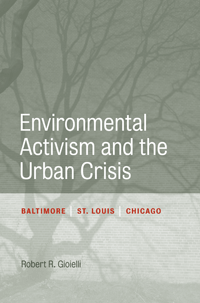

<body bgcolor="#FFFFFF" text="#000000" link="#0000FF" vlink="#CC0000" alink="#CC0000"><center><hr width="350" size="1" align="center" noshade>How the postwar decay of America's industrial cities contributed to the birth of the modern environmental movement<hr width="350" size="1" align="center" noshade><p><a href="https://cdcshoppingcart.uchicago.edu/Cart/ChicagoBook.aspx?ISBN=9781439904657&&PRESS=temple" target="_top">Buy this book!</a> | <a href="https://cdcshoppingcart.uchicago.edu/Cart/Cart.aspx?PRESS=temple" target="_top">View Cart</a> | <a href="https://cdcshoppingcart.uchicago.edu/Cart/Cart.aspx?PRESS=temple" target="_top">Check Out</a></p><p></p></center><!--none//--><h1>Environmental Activism and the Urban Crisis</h1>
<H2>Baltimore, St. Louis, Chicago</H2>
<h3>Robert R. Gioielli</h3>
<P>cloth 1-4399-0465-0 $64.50, May 14, <FONT COLOR=#990033>Available</FONT>
<br>paper 1-4399-0466-9 $29.95, Jul 15, <FONT COLOR=#990033>Available</FONT>
<br>Electronic Book 1-4399-0467-7 $29.95 <FONT COLOR=#990033>Available</FONT>
<BR> 224 pp
6x9
11&nbsp;halftones
</P><BLOCKQUOTE><I>"</i>Environmental Activism and the Urban Crisis<i> is one of the best studies of the city that I have read in the past five years. It significantly improves our understanding of the turbulent, �urban crisis� of the 1960-70s through a lens of environmental politics. Thoughtful and well written, it sandwiches three tightly focused investigations of grassroots activism between chapters that situate these stories within the broad perspectives of national development. Gioielli illuminates the struggles of inner city residents to reduce hazards to their health and safety, and his arguments are succinct and persuasive."</I>
<br>&#151<b>Harold L. Platt</b>, Professor of History Emeritus, Loyola University Chicago</I></BLOCKQUOTE>
<P><I>Environmental Activism and the Urban Crisis</I> focuses on the wave of environmental activism and grassroots movements that swept through America's older, industrial cities during the late 1960s and early 1970s. Robert Gioielli offers incisive case studies of Baltimore, St. Louis, and Chicago to show how urban activism developed as an impassioned response to a host of racial, social, and political conflicts. As deindustrialization, urban renewal, and suburbanization caused the decline of the urban environment, residents-primarily African Americans and working-class whites-organized to protect their families and communities from health threats and environmental destruction.
<P>Gioielli examines various groups' activism in response to specific environmental problems caused by the urban crisis in each city. In doing so, he forms concrete connections between environmentalism, the African American freedom struggle, and various urban social movements such as highway protests in Baltimore and air pollution activism in Chicago. Eventually, the efforts of these activists paved the way for the emergence of a new movement-environmental justice.
<BR>&nbsp;<h2>Excerpt</h2><P>Excerpt available at <a href="http://www.temple.edu/tempress">www.temple.edu/tempress</a></p>
<BR>&nbsp;<h2>Reviews</h2>
<p><I>"</I>Environmental Activism and the Urban Crisis<I> is an important work that addresses important issues. Robert Gioielli looks at alternatives to the standard story of middle-class environmentalism by exploring the involvement of the working-class and communities of color in challenging policies and actions that threatened the environments of their communities. In doing so, he gives us a more complex understanding of the birth of modern environmentalism. This book will make a significant contribution to the field of environmental history."</I> <br>&#151<b>John Cumbler</b>, Department of History at the University of Louisville
<p><i>"Gioielli effectively demonstrates the interconnectedness between urban environmental activism and social, cultural, and economic issues (racism, joblessness, civil rights, etc.) by focusing on protests against lead-paint poisoning in St. Louis, highway-building in Baltimore, and air pollution in Chicago. Through these activities, the author documents the evolution of urban environmental activism, organizations, and policies that led to the distinct environmental justice movement of the 1980s and 1990s. VERDICT Of great interest to both academic and general readers concerned with equitable and inclusive environmental activism and policies, urban studies, civil rights, local politics, and community organizing."</i><br>&#151<b><i> Library Journal</i></b>
<p><i>"Gioielli�s book shows the interrelatedness of the urban crisis and the environmental movement during the 1960s�. [It is] a complex tale that Gioielli navigates well�. Crisply written and informative�Gioielli�s work largely succeeds in its goals. The book is important to specialists in urban and environmental history and usable in upper-level coursework."</i> <br>&#151<b><i> Journal of American History</i></b>
<p><i>"Part of the 'Urban Life, Landscape, and Policy' series, this study challenges a longstanding notion that the environmental activism of the 1960s and 1970s was the exclusive province of whites, the educated, and the relatively affluent.... The author reveals movements for racial justice conjoining simultaneously with grassroots environmental activism with varying degrees of success in addressing the myriad problems plaguing these particular cities.... Summing Up: Recommended."</i> <br>&#151<b><i>Choice</i></b>
<p><i>"Gioielli's terrific new study of environmentally oriented community political uprisings in older American cities in the second half of the 20th Century.... is the double-barreled story of people trying to save both cities (i.e., humans) and the environment (i.e., nature).... The stories aren't as well known as they should be. (Spoiler alert: none has a Hollywood ending.) All are stirring, with sweeping tableaus of righteousness, anger, and courage�. Gioielli's stories are lively and authoritative, and he has a good ear. The headings are catchy�and there are entertaining, enlightening snippets about many personalities.... Gioielli's greater contribution is with his bookends, the lessons he pulls from the case histories, which open up many fine lines of thinking and exploration."</i><br>&#151<b><i>Journal of Urban Affairs</i></b>
<p><i>"[The] attention to nearby places and local knowledge drives the narratives in Robert R. Gioielli's excellent book about environmental activism in the age of urban renewal and the 'urban crisis' of the 1960s. Gioielli deftly traces an origin story of the urban crisis, emphasizing the structural changes in housing policy, urban planning philosophies, and incentives for white flight that set the stage for many conditions that urbanites confronted by the 1960s... [A] well-constructed and carefully researched book."</i> <br>&#151<b><i>American Historical Review</i></b>
<p><i>"[This book] is a timely work of scholarship that focuses on case studies in three cities that over the past year have figured prominently in controversies surrounding police shootings and the prospects of urban African Americans. Gioielli is to be commended for producing a well-researched and thoughtful book that makes important contributions to both urban environmental history and scholarship on the urban crisis.... </i>Environmental Activism and the Urban Crisis<i> is a welcome addition to the ever-expanding field of urban environmental history. Gioielli has done a great service in reminding us of the fluidity of environmentalism and in revealing that the trajectory of the environmental movement in the United States was not foreordained."</i> <br>&#151<b><i>Environmental History</i></b>
<p><i>"Gioielli offers a compelling addition to calls expanding the boundaries of the modern environmental movement. Leveraging extensive archival research and contextualized within the literature of environmental history, Gioielli's </i>Environmental Activism and the Urban Crisis<i> presents a revisionary account of the environmental politics of American cities in the last decades of the twentieth century.... </i>Environmental Activism and the Urban Crisis<i> offers an interesting experience�the beginning and end of chapters are informal and accessible, often focused on charismatic individuals and recounting exciting vignettes.... Gioielli persuasively re-unites movements and activism that others would tend to split apart."</i> <br>&#151<b><i>Ohio Valley History</i></b>
<BR>&nbsp;<h2>Contents</h2><P>
<p> Acknowledgments
<br>
<br>Introduction: The Uncounted Environmentalists
<br>1. The Breakdown of the City
<br>2. �Black Survival in Our Polluted Cities�: St. Louis and the Fight against Lead Poisoning
<br>3. �We Must Destroy You to Save You�: Baltimore's Freeway Revolt
<br>4. The Knee-in-the-Groin Approach: The Citizen's Action Program and Environmental Protest in Chicago
<br>5. �City Dwellers Are in the Greatest Danger�: Urban Environmentalism in the 1970s
<br>Conclusion: Missed Opportunities
<br>
<br>Appendix: Archival Abbreviations
<br>Notes
<br>Index
</P><BR>&nbsp;<H2>About the Author(s)</H2>
<P><b>Robert R. Gioielli</b> is Assistant Professor of History at University of Cincinnati Blue Ash College.</P>
<BR><H2>Subject Categories</H2>
<p><A HREF="/tempress/history.html" TARGET="_top">History</a>
<BR><A HREF="/tempress/nature.html" TARGET="_top">Nature and the Environment</a>
<BR><A HREF="/tempress/urban.html" TARGET="_top">Urban Studies</a>
</p>
<BR><h2 class="inpageheading">In the series</H2>
<P><I><a href="http://www.temple.edu/tempress/urban_life.html" onMouseOver="window.status='Click for other books in this series!'; return true;" onMouseOut="window.status=''; return true;" target="_top">Urban Life, Landscape, and Policy</a></i>, edited by Zane L. Miller, David Stradling, and Larry Bennett.
</p><p><i>Urban Life, Landscape, and Policy Series</i>, edited by Zane L. Miller, David Stradling, and Larry Bennett, features books that examine past and contemporary cities, focusing on cultural and social issues. The editors seek proposals that analyze processes of urban change relevant to the future of cities and their metropolitan regions, and that examine urban and regional planning, environmental issues, and urban policy studies, thus contributing to ongoing debates.</p>
<p align="center"><a href="https://cdcshoppingcart.uchicago.edu/Cart/ChicagoBook.aspx?ISBN=9781439904657&&PRESS=temple" target="_top">Buy this book!</a> | <a href="https://cdcshoppingcart.uchicago.edu/Cart/Cart.aspx?PRESS=temple" target="_top">View Cart</a> | <a href="https://cdcshoppingcart.uchicago.edu/Cart/Cart.aspx?PRESS=temple" target="_top">Check Out</a></p><p><font face="Arial" size="1"><a href="copyright.html" onMouseOver="window.status='Web Copyright Policy';return true;" onMouseOut="window.status=''" title="Web Copyright Policy">&copy;</a> 2016 <a href="http://www.temple.edu" target="new" onMouseOver="window.status='Link to Temple University home page';return true;" onMouseOut="window.status=''" title="Link to Temple University home page">Temple University</a>. All Rights Reserved. http://www.temple.edu/tempress/titles/2126_reg.html</font></p>